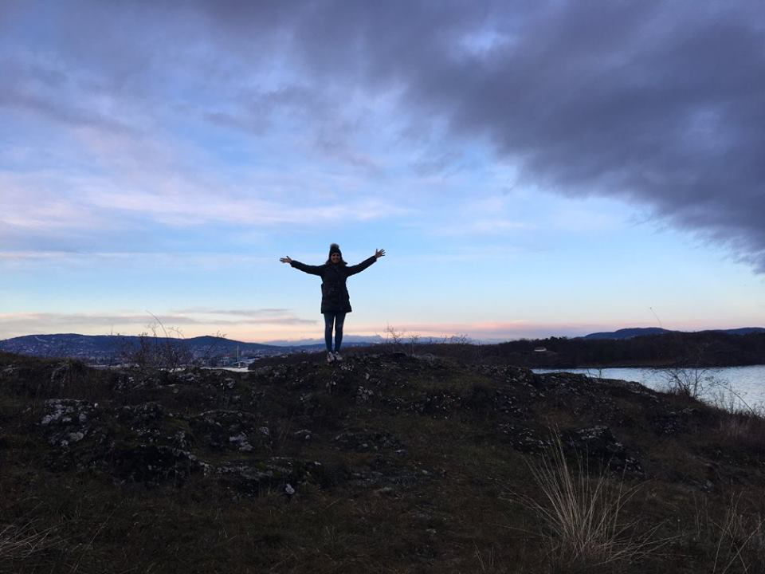

Web platform connecting patients with patient-reviewed treatments and research opportunities
Led team’s business development efforts with funding, strategy, and brand awareness
Networked and contacted 20 potential stakeholders and identified 11 more for future engagement
Created effective pitch deck, executive summary, and sponsorship document
Applied to 2 funding opportunities with $150K in potential winnings and identified 13 additional opportunities with over $800K potential winnings before EOY
Designed marketing website and provided critical feedback for hi-fi wireframes for initial product
Produced revenue projections by analyzing trends in excel
New York
Aug 2017 - Aug 2017
iXperience — Web Development Student and Campus Ambassador
An innovative and immersive summer program teaching students high-demand skills, providing real world internship experience, and giving students the opportunity to explore another country and culture
Promoted iXperience via Facebook, reaching over 300 students with personal application link
Organized meetings between NYU staff and iXperience administration
Created effective pitch deck, executive summary, and sponsorship document
Completed 8-week front end web development program, including 4-week internship
New York
Aug 2017 - Aug 2017
NYU — Office Assistant / Web Developer
New York University study abroad site in London, UK
Divered hi-fi wireframes and began development for NYU London Global Orientation website
Managed and coordinated all aspects of projects, including meetings with supervisor
New York
Aug 2017 - Aug 2017
Funzing — Marketing Intern
Platform for personal experiences and events hosted by others sharing their skills, passions and hobbies
Executed cross-channel marketing strategies, using Facebook and Meet Up to generate excitement for Funzing events and increase brand awareness
Wrote blog posts, creating content for Funzing blog that was used as marketing material
New York
Aug 2017 - Aug 2017
Isoflow — Web Developer and UX/UI Intern
Cape Town based Web and Mobile Design agency
Developed functional front-end website for client, BitX
Collaborated with team to create functional prototype for video clients’ server dashboard using Axure
Mocked up wireframes for Albatros golf management solutions
Education
New York
Aug 2017 - Aug 2017
New York University Stern School of Business
Major
BS in Business and Political Economy (BPE)
Minors
Minoring in Peace and Conflict Studies and Business Entertainment Media and Technology (BEMT)
Skills & Languages
Spoken
English: Native
Spanish: Beginner
Technical
MS Office: Advanced
Google Suite: Advanced
Sketch: Advanced
HTML + CSS: Proficient
Axure: Proficient
InVision: Proficient
Adobe Photoshop: Familiar
Javascript + AngularJS: Familiar
Relevent Courses
International Political Economy
International Economics
Foundations of Finance
Principles of Financial Accounting
Statistcs for Business / Regression & Forecasting Models
Introduction to Economic and Political Thought
Microeconomics
The Future of the Streaming Economy
Introduction to Macroeconomics
World Politics
Introduction to Marketing
Leadership & Extracurriculars
New York
Aug 2017 - Aug 2017
The InnoVention Society — Co-Finance Chair
NYU student run club supporting NYU affiliates invested in entrepreneurship with resources and community
New York
Aug 2017 - Aug 2017
Kinetic — Environmental Committee
Student led volunteering committee in NYU London working on long term social innovation projects
New York
Aug 2017 - Aug 2017
Bronfman Center (Hillel) — Jewish Learning Fellow / Chavurah Member
A semester of intellectual and experiential learning to deepen students’ understanding of Judaism
New York
Aug 2017 - Aug 2017
Lincoln-Sudbury Regional High School — Teaching Assistant and Mentor
Mentored students with special needs and assisted with class activities in Applied Biology
*Not sponsored by nor affiliated with Samsung* Just a funny 360 pic I took with my parents at the store by the Highline.
As part of my Major, Business and Political Economy, students spend in my class their entire sophomore year abroad in London. Other than a family trip to Greece when I was 12, I had never been to Europe so having the opportunity to spnd 8 months in London was a dream. I fell in love with the city and
Date: January 2017
Thessoleniki, Greece
Help Refugees
Poland
March of the Living
Date: April 2017
Oslo Norway

First solo trip wooo
Date: November 2016
Cape Town, SA
iXperience wooooo
Date: June - July 2016
Costa Rica
Traveling with your parents versus traveling without your parents definitely has some stark differences. For starters, the planning. In my personal experience with family vacations, my parents have picked dates and a destination and made the arrangements and my sister and I have just come along for the ride. Nice and easy, I know. But nice and easy is not real life. In real life if you want something, you have to make it happen yourself. And so that was this trip. My sister and I wanted to go backpacking, just the two of us. So we worked with a small budget, researched affordable flights and cheap hostels and booked it.
The trip itself was incredible. We went surfing, ziplining, rafting and running through the forest. We went to a few cities while we were there and to get from place to place we
Date: August 2014
Israel
In 2008 I spent my first summer attending Camp Tevya - a Jewish sleepaway camp in Brookline, New Hampshire. The next four summers I left reality for three and a half weeks and entered a magical land full of waterskiing, color war and shira. The fifth summer was different. I was no longer a camper; I was a CIT, otherwise known as a counselor in training. This was the first time I spent 7 weeks rather than three and a half away from home. And I wasn't just in New Hampshire, I was't even in the United States anymore. The first five weeks of that fifth summer I spent traveling all over Israel on the Dor L Dor (Generation to Generation) leadership program.
Dor L Dor is a trip post the eldest age group of campers. It is a tour of Israel that is meant to be physically, spiritually and intellectually stimulating. And it was. It was a beautiful trip. We hiked Mount Masada at sunrise, spekt three days camping out in the Negev Dessert and got to explore amazing cities like Jerusalem and Tel Aviv. One of my favorite parts of the trip was the homestay weekend where everyone on the trip split up for the weekend and spent Shabbat with an Israeli family. I come from a Reform Jewish background and I ended up stayed with an Orthodox family, so there were a lot of practices that I was unfamiliar with. For instance, I did not know thats practicing males could not come in contact with unmarried women. The family had a son and when I met them, I initially put out my hand as a gesture to shake his and say hello. I realized he was not comfortable with that and put my hand down, but it was not until later that I understood why. Despite the rocky start, him and his family were incredibly kind, welcoming and gracious. I ended up having an amazing weekend. It was so interesting to see how the same religion could be treated so differently depending on the sect along with the location and history of those observing it. It was such a privilegde to have another family share that with me.
Date: June - July 2013
China
My uncle, Tio Leo, is anything but traditional. When he graduated MIT he got involved in a young company, which ended up being very kind to him when the company got acquired. This enabled him to follow is passion of adventure traveling and he took off around the world climbing mountaints and backpacking from country to country. During a trip to China he found himself in a bookstore where he met a girl who was working in the area as a tour guide. One thing led to another and after 7 years and countelss trip across the globe, I oficially got my Aunt Michelle in 2006.
In 2012 my immediate family and I went with Tio Leo and Michelle to China. We visited Beijing, Shanghai, Xian and Chongxing. From Chongxing we took a three day "cruise" on the Yangxi river and saw the Three Gorges Damn. The most memorable foods we ate were Peaking Duck in Beijing and amazingly spicy Hot Pot in Chongxing. Unfortunately on we did not visit Michelle's home town, but I'll just have to take another trip.
Date: August 2012
Peru
My grandfather fled Poland when he was 9 years old, at the start of World War II. He spent the rest of his childhood in Miraflores, Peru, but as a young adult left to make aliya to Israel and serve in the Israeli Army. During his service he met my grandmother who was working as a mathematics teacher in Israel at the time. My grandmother is from Belguium and managed to survive the war by hiding out on a farm in France. She had also made aliya after the war, and after she married my grandfather in Israel, the two of them moved back to Peru to be close to relatives and raise a family. My father spent his early childhood growing up in Peru and immigrated to the United States when he was 13.
When I was 6 years old my family and I took a long trip to Peru so that my sister and I could learn more about my dads life experience. Even though I was quite young, this trip had a really big impact on me. Up until that point I had always been an extremely picky eater - literally all I ate was plain pasta and oreos. But on this trip I actually opened up to different foods such as leeche and ceviche. While that may not seem like a big deal, it was what sparked my curiosity about other countries, cultures and cuisines. I also think that I have an amazing family history and it would be a shame to not learn as much as I can about it. I would love to go back now that I am older to experience Peru a whole new way.